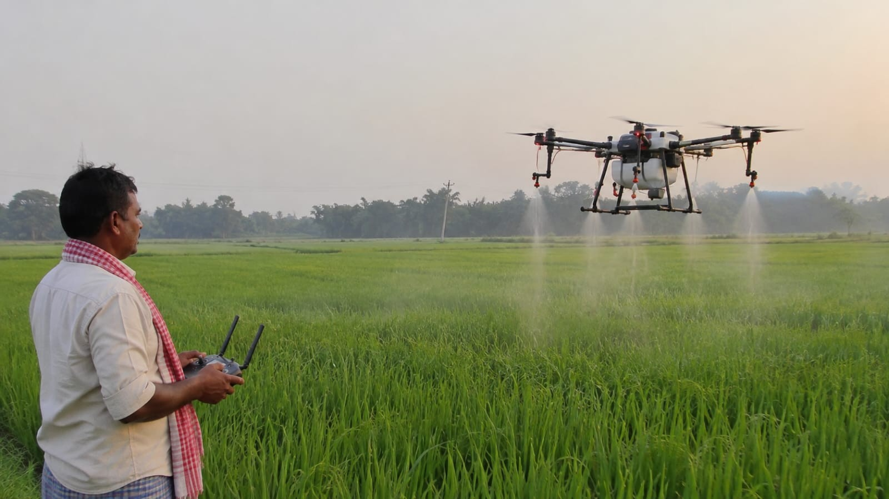
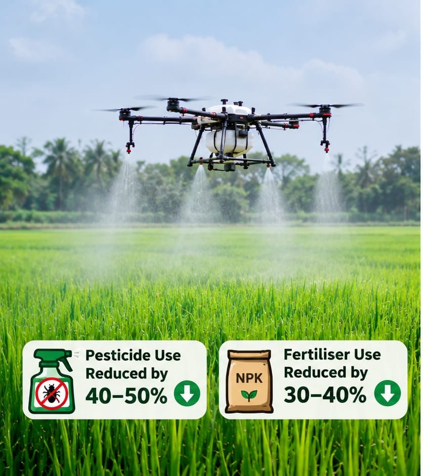
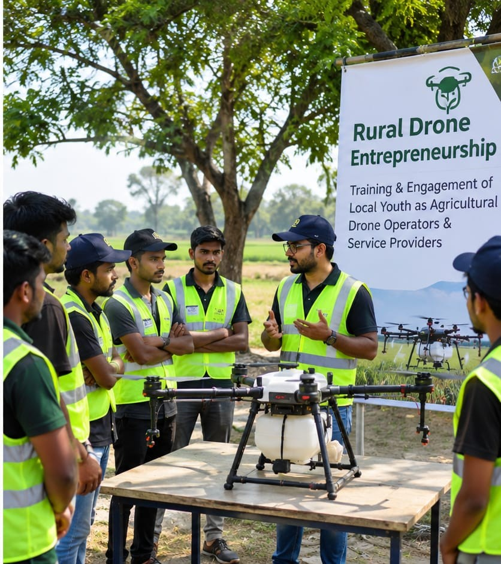

KRISHI PRAKRITI delivers advanced agricultural drone solutions for precision spraying, crop monitoring, and data-driven farm management. By integrating drone technology, and site-specific application techniques, we help farmers optimise agricultural input utilisation, improve operational efficiency, and promote sustainable crop production.
Our services focus on targeted pesticide and fertiliser application, crop growth assessment, and efficient field operations, reducing unnecessary chemical usage and supporting precision-based agricultural practices.
Book ServiceOur Services:
- Precision Spraying: Site-specific pesticide and fertiliser application to minimize input wastage and improve application efficiency.
- Variable-Rate Application: Targeted application of agricultural inputs based on crop requirements and field variability.
- Agricultural Field Mapping: Drone-based field surveys, spatial data collection, and crop-area assessment.
- Resource Optimisation: Potential reduction in pesticide usage by 40-50% and fertiliser usage by 30-40% compared with conventional application methods, subject to crop, field and application conditions.
- Rural Drone Entrepreneurship: Training and engagement of local youth as agricultural drone operators and service providers.


